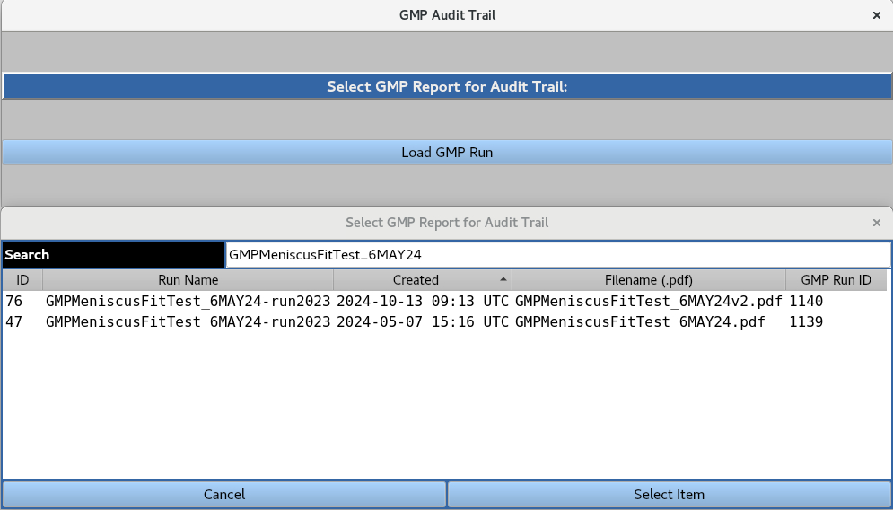
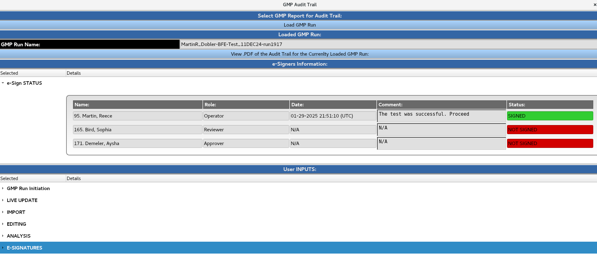

Manual
Manual
Manual
Manual
Logs all user interactions and electronic signatures for a GMP report PDF file.

A GMP run can be loaded from the database by highlighting it and clicking the 'Select Item' button. The user is then presented with the following interface:

'e-Sign STATUS' section records the user ID, name, role, date, time, comments, and signing status for the GMP run.
'User INPUTS' section logs all user interactions at various stages of the GMP run to ensure traceability. Each entry includes the user ID, date, time, and associated comments.
'View .PDF of the Audit Trail of the Currently Loaded GMP Run' loads the audit trail PDF file containing a record of all user interactions and e-signatures associated with the GMP run. This PDF file is a summary of the 'e-Sign STATUS' and 'User INPUTS' sections.